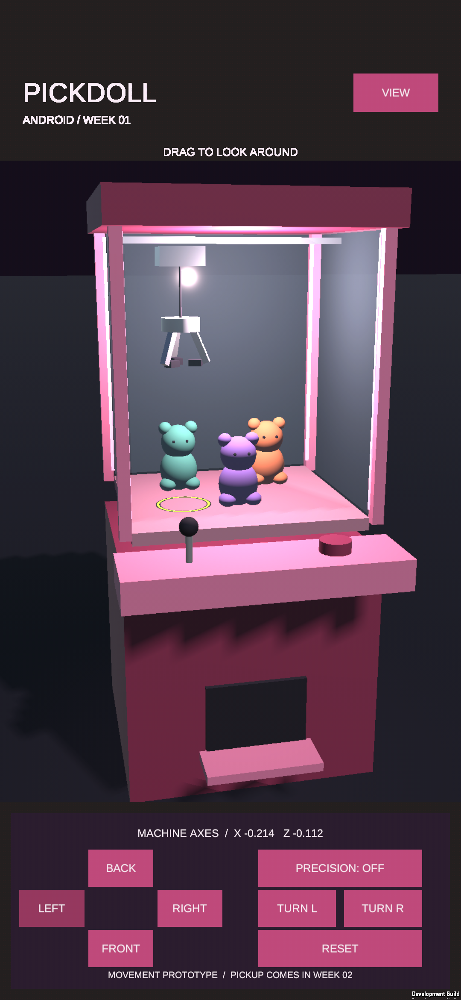
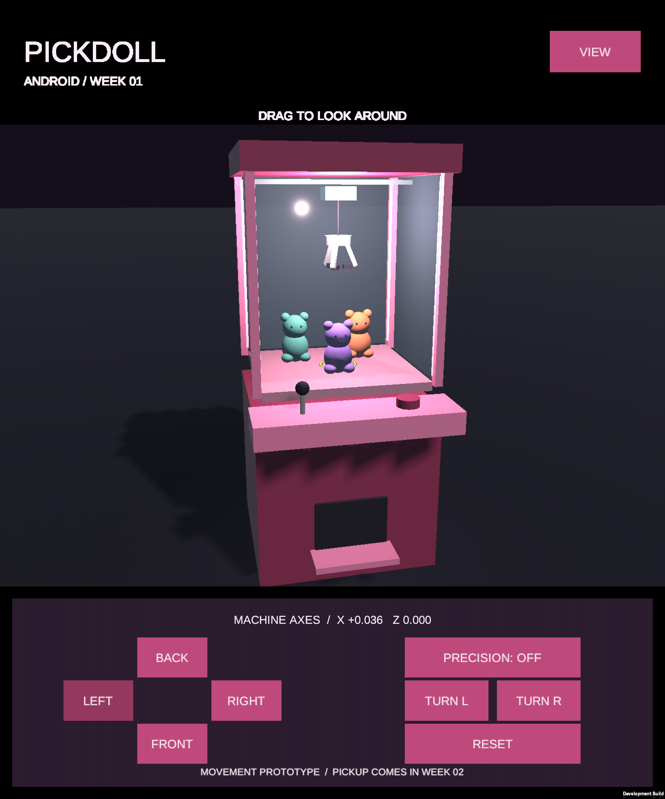
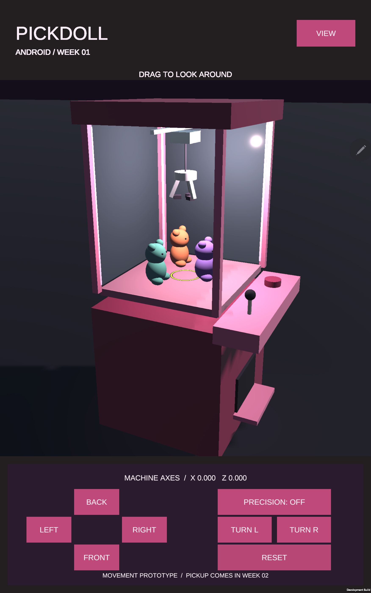

1주차 완료 보고서
Unity 개발 환경과 기계·조작의 기본 틀을 만들고, Android APK를 세 기기에 설치해 기본 동작을 확인했다.
01. 완료 판정
1주차 계획 범위 완료
개발 환경 구성, 기본 기계와 터치 이동 구현, APK 빌드, S26 울트라·폴드5 설치 시험을 완료했다. 계획에 추가해 갤럭시 탭에서도 동일 APK를 설치·확인했다. 게임 전체 완성이 아니라 첫 주의 기반 작업을 마감하는 판정이다.
동일 APK 설치·실행
사용자 정상 동작 확인
개발용 APK 빌드 1
ARM64 / IL2CPP
폴드5 전환 후
버튼 배치·이동·드래그 확인
| 1주차 계획 | 완료 근거 | 결과 |
|---|---|---|
| Unity·Android 환경 준비 | Unity 6000.5.5f1, URP 17.5.0, Input System 1.19.0, uGUI 2.5.0 구성. SDK 36·NDK r27c·OpenJDK 17 설치 | 완료 |
| 프로젝트 기본 구조 | Unity 폴더 분리, 실행 씬·재질·런타임/에디터 코드·빌드 도구 구성 | 완료 |
| 기본 기계·터치 입력 | 캐비닛·집게·임시 인형, 이동·저속·회전·시점·초기화 구현 | 완료 |
| APK 빌드와 기기 설치 | ARM64 라이브러리 포함 및 APK 서명 검증. S26 울트라·폴드5·갤럭시 탭에 설치 | 완료 |
| 결과 기록과 다음 작업 정리 | 실기기 스냅샷, 실행 안내, 검증 기록, 본 완료 보고서 작성 | 완료 |
주당 6시간은 계획 기준이다. 실제 투입 시간을 별도로 계측하지 않았으므로 6시간 내 완료했다고 단정하지 않는다. 최초 도구 설치·캐시 생성·빌드 대기와 실행 중단 후 재개가 있었다.
02. 구현 내역
기계와 화면
- 분홍색 캐비닛, 유리벽, LED 커버와 내부 조명
- 상단 이동 장치·집게와 임시 곰 인형 3개
- 상단 이동 장치 바로 아래를 표시하는 안정적인 조준원
- 드래그 자유 시점과 VIEW 고정 시점 전환
입력과 프로젝트
- 시점과 무관한 기계 정면 기준 이동
- PRECISION 저속 이동, 집게 회전, RESET
- 터치 UI와 PC 키보드 입력, Safe Area·화면 크기 대응
- 이동 입력의 앱 전환·일시 중단 시 해제 처리
- 씬 생성, 씬 로직 검사, Windows·Android 빌드 및 기기 설치 스크립트
방향은 기계 정면 기준이다. BACK/↑는 뒤쪽, FRONT/↓는 앞쪽으로 움직인다. 현재 PRECISION은 연속 저속 이동이며 1mm 단위 누르기 이동은 아직 구현하지 않았다.
03. 시험 결과와 확인 방법
| 대상 | 확인한 내용 | 확인 방법 |
|---|---|---|
| 에디터 씬 로직 | 네 시점에서 +X/+Z 이동 일관성, 이동 한계, 저속 이동 속도, 조준원 기준, URP와 HUD 참조 | 자동 검사 PASS |
| Windows 플레이어 | 540×960·720×840에서 실행·UI 초기화·이동 로직·스냅샷 | 빌드된 앱의 자동 검사 PASS 및 이미지 확인 |
| APK | ARM64 IL2CPP 라이브러리 포함, APK v2 서명 | ZIP 내용 검사 및 apksigner 검증 통과 |
| S26 울트라 | 설치·버전·앱 프로세스·전면 실행·렌더링·기본 이동 | ADB·화면 캡처 + 사용자 “잘 움직여” 확인 |
| 폴드5 | 설치·실행·내부 화면, 접고 펼친 후 버튼 배치·이동·드래그 | ADB·화면 캡처 + 사용자 정상 동작 및 전환 시험 확인 |
| 갤럭시 탭 SM-X820 | API 36·ARM64 호환, 동일 APK 설치·실행·큰 화면 배치·기본 동작 | ADB·화면 캡처 + 사용자 “잘동작해” 확인 |
사용자 확인과 자동 검사를 구분해 기록했다. 장시간 발열·안정성, 실제 프레임률, 모든 입력 조합은 아직 검증하지 않았다. 60fps는 목표이며 측정 완료 수치가 아니다.
04. 실제 실행 화면

폴드5·갤럭시 탭 화면 보기




05. 산출물과 재현 방법
| 산출물 | 위치 / 내용 |
|---|---|
| Unity 프로젝트 | Unity/ · 실행 안내 |
| 기본 씬 | Unity/Assets/PickDoll/Scenes/Week01.unity |
| 개발용 APK | PickDoll-week01.apk · 41,955,365 bytes / 40.0 MiB |
| 버전·환경 | 0.1.0 / versionCode 1 / minSdk 26 / targetSdk 36 / ARM64 IL2CPP / OpenGL ES 3 |
| 검증 기록 | Unity/Builds/Checks/ · 씬 검사·PC 실행·APK 및 기기 확인 기록 |
| 빌드 로그 | Unity/Builds/Logs/ · 빌드 성공 표식 확인 |
APK SHA-256: 086C60E9CE0EFF206070303F8A6E003E514A35DBAA05AB1BA7B16794BF9D373A
Unity Hub에서 Unity 폴더를 열고 Week01 씬에서 Play를 누른다. Android에서는 설치된 PickDoll 앱을 실행한다. 현재 APK는 개발용 서명이며 Play Store 출시용 AAB가 아니다. APK·실행 파일·검증 로그는 로컬 생성물로 Git 저장소에는 포함하지 않으며, 새로 복제한 환경에서는 빌드 후 해당 경로를 사용할 수 있다.
06. 남은 사항과 마감 판단
세 Android 기기의 시작 로그에서 AssetPackManager 클래스 누락 오류를 확인했다. 현재 앱은 자산 분할 다운로드를 사용하지 않고, 오류 이후 화면과 기본 조작은 정상 확인했다. 따라서 이동 프로토타입의 1주차 마감은 가능하다고 판단하되, 공개 출시 전 원인과 엔진·배포 설정을 재검증해야 하는 미해결 항목으로 남긴다. 오류가 완전히 없는 빌드라고 보고하지 않는다.
관련 기능 설명: Unity AndroidAssetPacks 문서. Google Play Games 업적과는 별도의 자산 다운로드 기능이다.
현재 HUD는 Unity 기본 글꼴을 사용한 영문 임시 화면이며 인형·기계 외형은 최종 미술이 아니다.
07. 2주차 착수 항목
- 집게의 하강·상승 제어와 손가락 닫힘을 구현한다.
- 임시 인형에 질량·충돌체를 붙여 실제 접촉으로 집히게 한다.
- 잡기 → 들어 올리기 → 이동을 검증하고, 미끄러짐·놓침·끼임을 조정한다.
- 기본 인형을 운반할 수 있는지 확인한 뒤 콘텐츠와 도감 개발로 넘어간다.
2주차 완료 목표는 기본 인형을 실제 물리 접촉으로 잡고 들어 이동하는 시제품이다. 배출구·획득 집계까지의 한 사이클은 전체 계획의 3주차 범위다.